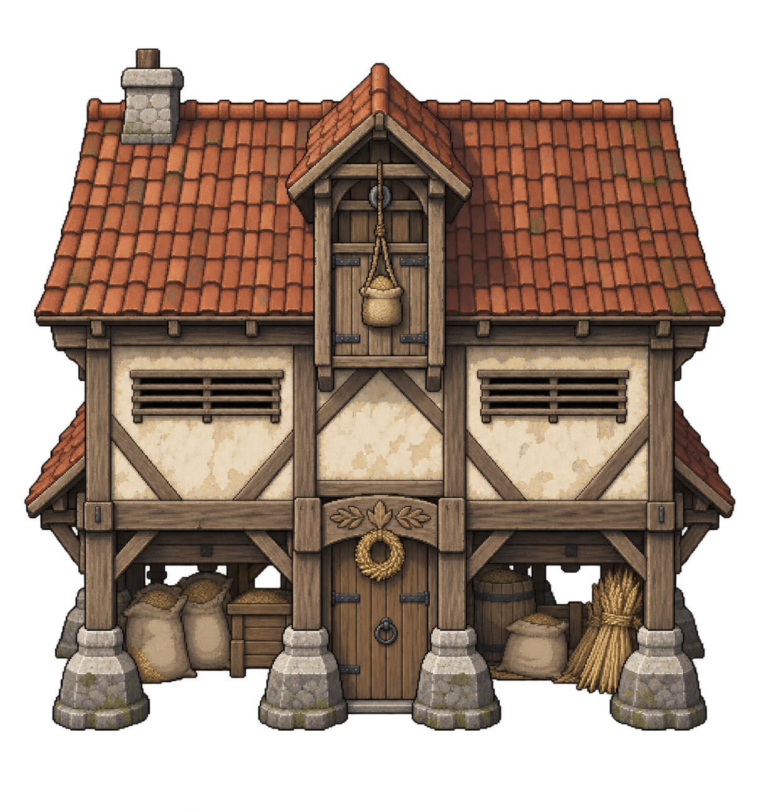
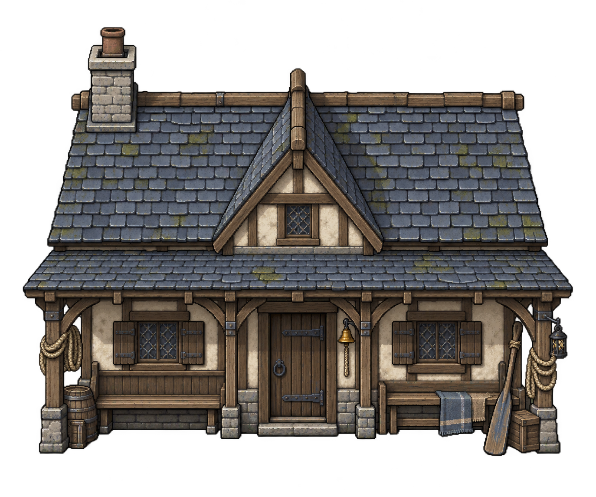
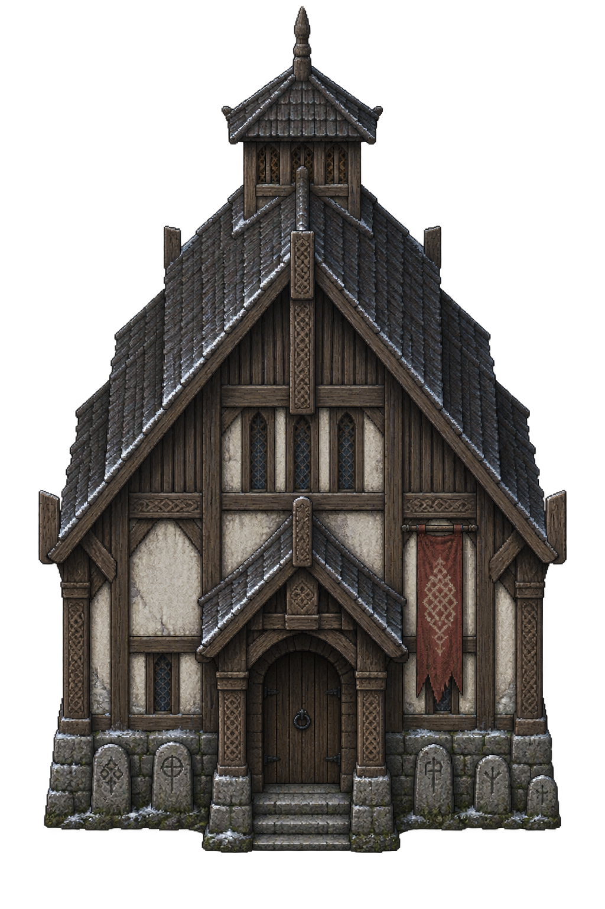
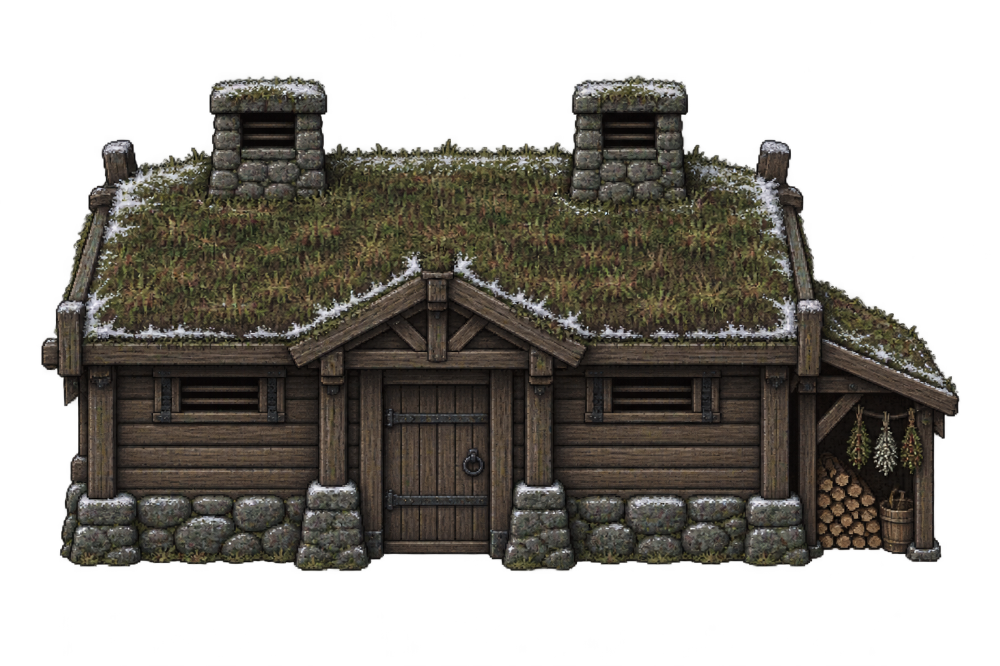
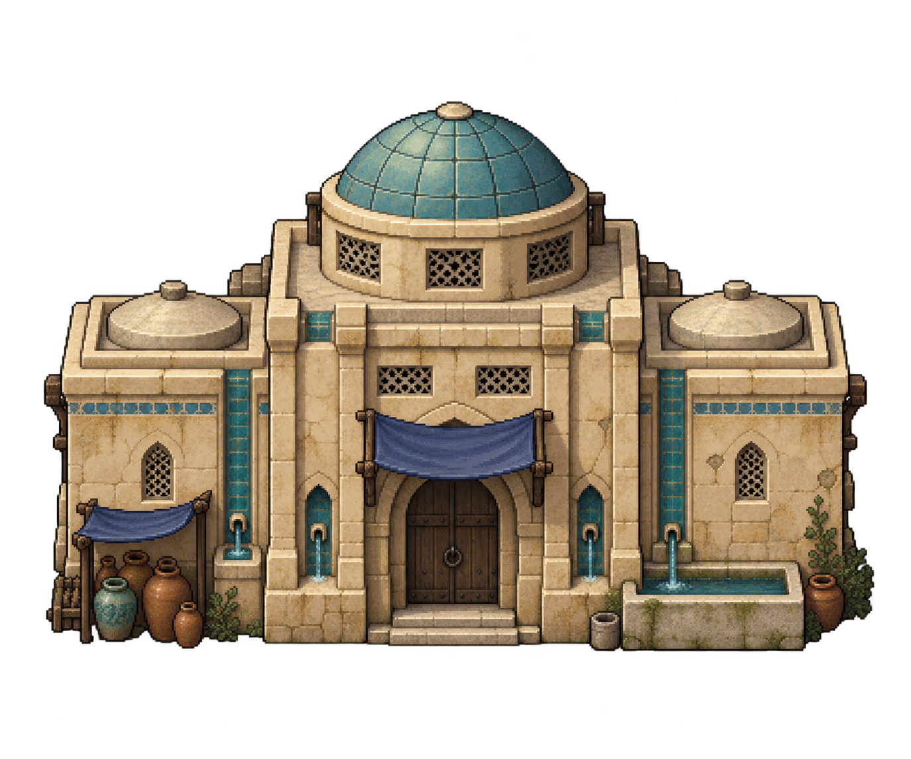
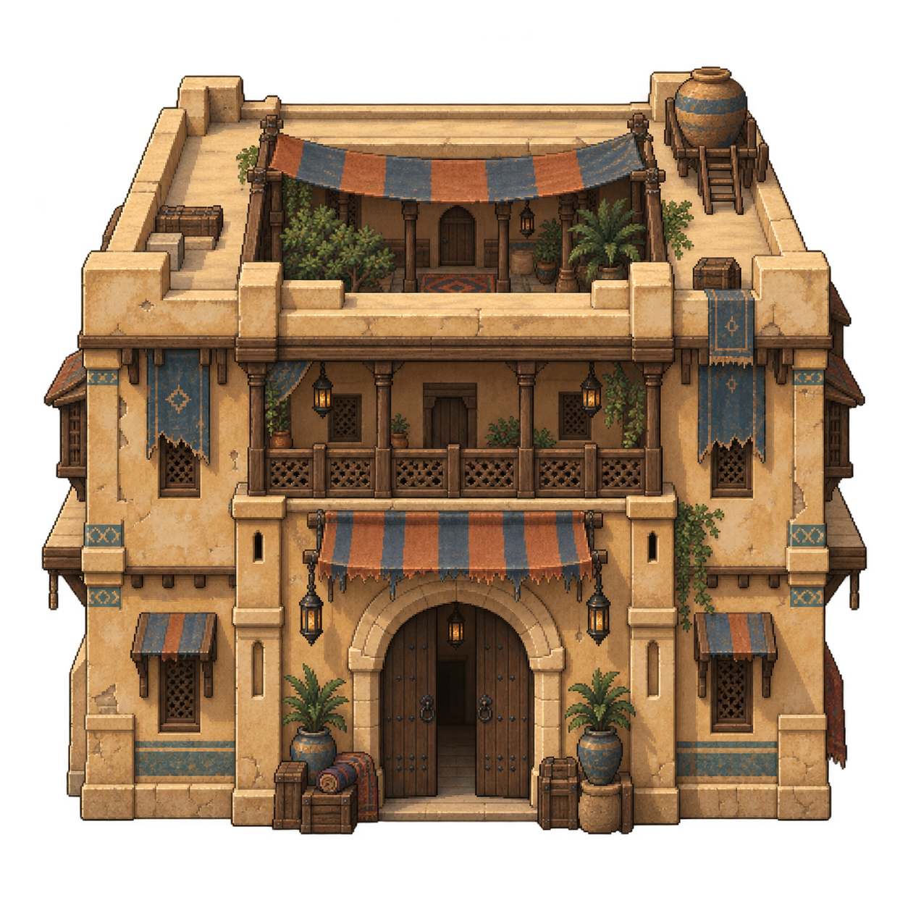
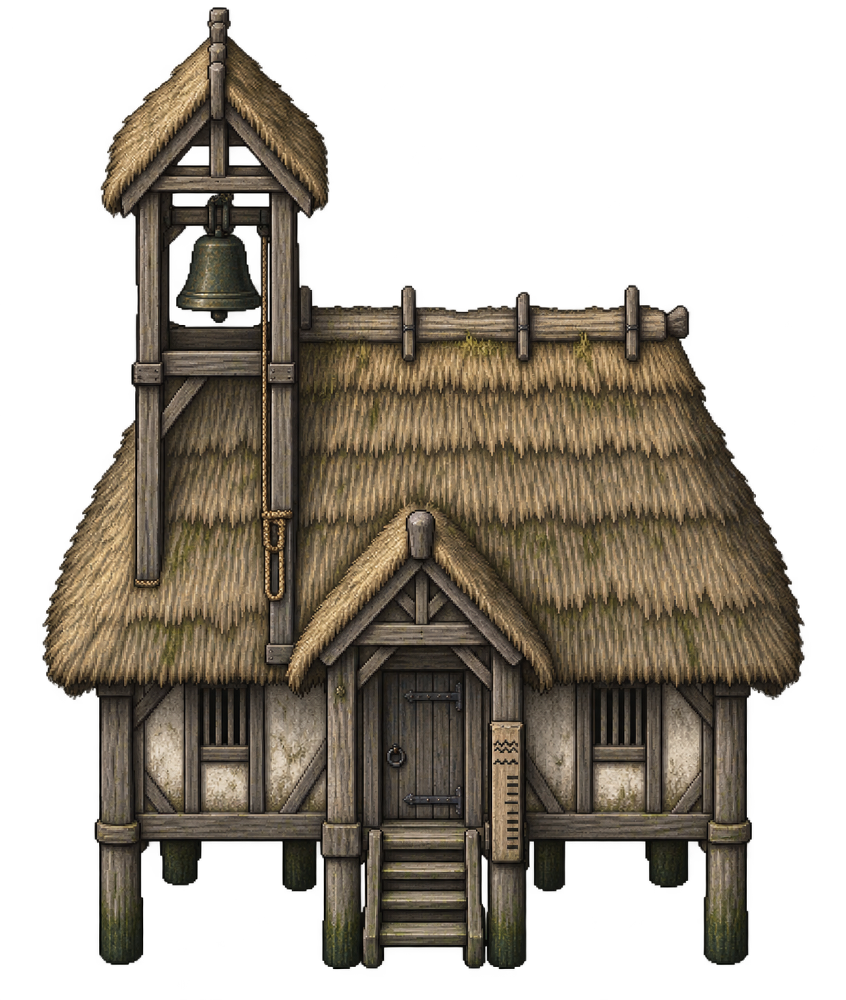
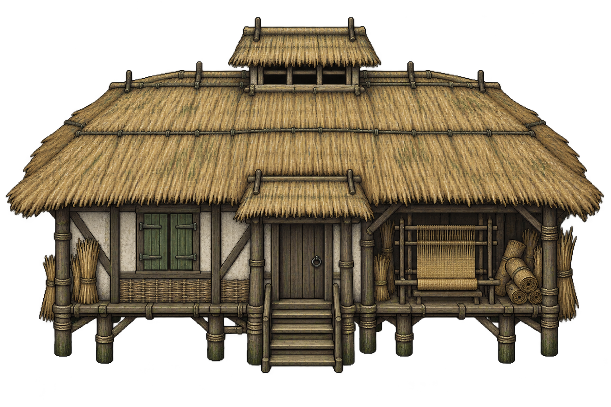
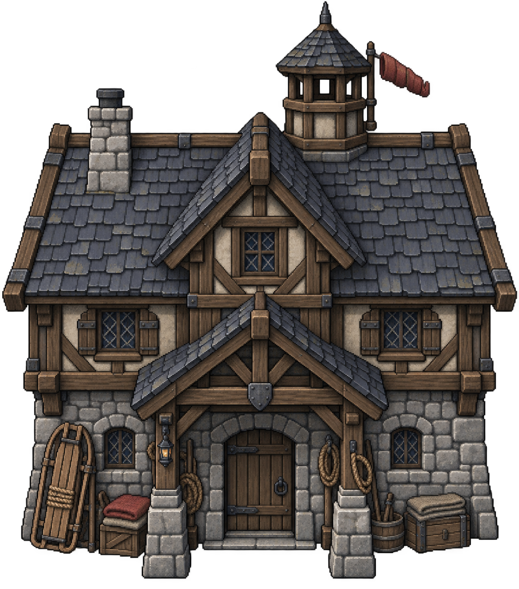

Common Granary
Oakhaven, Elderford, Archive City, Moonspire
Nine new building types, placed in 38 locations across 24 settlements. Enter them to meet the keepers and explore rooms arranged around local work, hospitality and remembrance.

Oakhaven, Elderford, Archive City, Moonspire

Riverside, Briarbridge, Foxbarrow

Highwall, Ironvale, Snowrest, Pineward

Highwall, Ironvale, Snowrest, Pineward

Sanctum, Embermarket, Dunewick, Sunmere, Redcairn

Sanctum, Embermarket, Dunewick, Sunmere, Redcairn

Belltower, Reedwatch, Mireford, Glimmerfen, Stormfen

Belltower, Reedwatch, Mireford, Glimmerfen, Stormfen

Northwatch, Cairnvale, Greyharbor